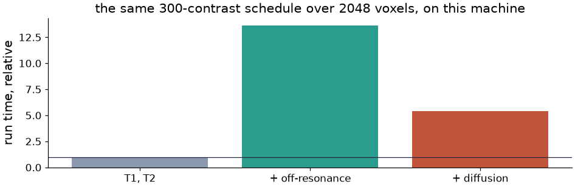
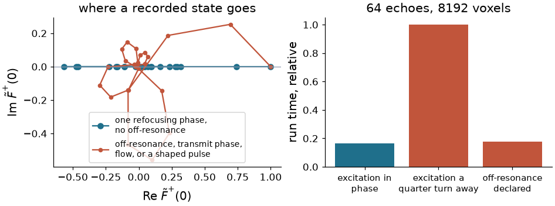
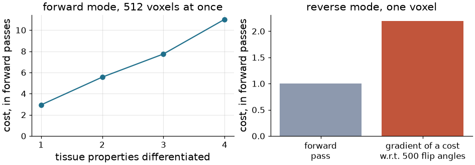

How TorchSim runs it#
Extended phase graphs says what is being computed. This page says how, and why the shape of the code is what it is: one description of a sequence, one fused kernel per voxel, and derivatives taken in whichever direction the question asks for.
You do not need any of it to use TorchSim. You need it to know what a run costs before you launch it, to read a number that surprises you, and to change something without breaking the pieces underneath.
One path, from the sequence you write to the signal#
Everything a sequence can say is said once, in a
SequenceDescription: a list of events, each with a
timestamp, a payload, and an action word saying what the sequence plays
around it. Whatever assembled that description – operators you composed, a
builder that ships here, a stream that arrived from a scanner – what runs
afterwards is identical, because nothing downstream ever asks where the
description came from.

The whole path. Everything to the left of the dashed line is Python and happens once per structure; everything to the right is compiled and happens once per run. There is no interpretation of a sequence during a simulation, and no per-event dispatch: by the time a kernel starts, a sequence is nine flat arrays.#
The split is what makes the same code fast on a dictionary of a hundred thousand atoms and honest about a single voxel. It is also what lets a sequence be differentiated: the description carries tensors, so a flip angle in it can be the variable an optimizer moves.
A sequence is events, and each carries what happens around it#
An event is a wait, an RF pulse, or an ADC. Gradients are not events. A Pulseq
file has no gradient use field, so a crusher cannot be told from a phase
encode by looking at waveforms without tracking the k-space moment through the
whole TR – and instead of doing that, TorchSim has each event declare its own
role: CRUSH_BEFORE, CRUSH_AFTER, SHIFT_AFTER, SPOIL_AFTER.

A four-echo refocused train, as describe()
emits it. The crushers ride on the refocusing pulses that sit between them,
which is why Refocusing is one operator rather than three; a spoiled
readout would instead carry SPOIL_AFTER, and an unbalanced one
SHIFT_AFTER. The ADCs are marked as echo centres, which is how a
reconstruction picks the samples it wants without counting events.#
Operators are how you write those events. Excitation, Refocusing,
Readout, Dephase, Spoil, Delay and the readout modules built
from them speak exactly the vocabulary the kernels implement, so a module you
write yourself – a T2 preparation, an MT saturation, a shaped pulse – reaches
the kernels with no change to them. What an operator cannot say is how much a
gradient dephases: a description carries one crusher moment for the whole
sequence, and dephasing is quantized to whole configuration orders.
What a voxel holds while it is simulated#
The state of a voxel is the three families over the orders it carries, and nothing else. That is what a kernel keeps in registers, and it is why an EPG simulation of a whole volume fits where an isochromat simulation of it does not.

One voxel’s whole state, and what carrying more orders costs. In float32 a voxel at 20 orders is under half a kilobyte, so a million-voxel volume is a few hundred megabytes of state – the reason a run is limited by how many voxels a card holds rather than by the sequence.#
You set the order count with states= on a simulator, or nstates= on a
call. Left alone, TorchSim counts the winding the description declares –
every CRUSH, every SHIFT_AFTER, over every repetition – and sizes the
state from that, clamped into a sensible range. Measuring convergence for your
own sequence is two calls, as in Extended phase graphs.
One kernel, not a graph of operators#
Written as tensor operations – a rotation here, a shift there – an EPG simulation would be one kernel launch per event, each reading the state out of memory and writing it back. For a thousand-event schedule over a thousand voxels, that is a thousand launches moving data that never needed to leave the processor.

Why the state machine is fused. One program per voxel walks the whole event stream with the state in registers, touching memory once at the start and once at the end – plus the samples it records. What the kernel loops over is the sequence; what it is parallel in is the voxels.#
There are two implementations of that program and they compute the same thing. The CPU one is a threaded C++ extension, with a lane-vectorized path that runs eight trains at once where the arithmetic allows it. The GPU one is written in Triton and compiles a specialization per feature combination it meets – which is why the first call on a card can take tens of seconds while the second takes milliseconds. Every mode exists on both sides: forward, forward-mode, adjoint, forward-over-reverse, the real-subspace specialization, and the pool models.
You pay for the physics you declare#
A tissue property has an identity – the value at which it has no effect on the answer – and a run reads which properties were actually passed to decide which terms the kernel evaluates. Off-resonance, diffusion, flow, a transmit array, a second pool: each is a term that is simply absent unless a model asks for it. This is what makes a model’s property declaration a physics declaration, and adding one line to it the whole of adding an effect.
{kind=link}

The same fingerprinting schedule over the same voxels, with more physics declared each time, measured on the machine that built this page. Numbers of this kind belong to a machine and a run size and are not to be quoted; the shape is the point. Asking for a second pool is not a term on top of these at all – it selects a different kernel, with a coupled relaxation-exchange operator [1] in place of the two scalar factors.#
When the states never leave a line#
If every refocusing pulse shares one phase, the excitation is in phase with them or a half turn away, and there is no off-resonance, no transmit phase and no flow, then the states stay on one axis of the complex plane for the whole train. That is the CPMG and anti-CPMG arrangement of the EPG literature [2], and it means the arithmetic can be done in real numbers: the shift’s conjugate coupling becomes a sign, and the rotation reduces to a real 3x3.
A pulse a half turn round is the same pulse turning the other way, and a sample demodulated a half turn round is the same sample negated. The event stream is packed with those half turns subtracted – the flips they negate carry the sign, and the samples they negate hand theirs to the signal – so an anti-CPMG train, or one alternating its phase every repetition as a phase-cycled balanced sequence does, arrives on one axis and takes this path. Both identities hold at every phase, so what the packing rewrites is differentiated exactly.
{kind=link}

Left, where the recorded state goes in the two cases. Right, the same 64-echo train over the same voxels, with the excitation in phase with the refocusing pulses, a quarter turn away from them, and in phase but with off-resonance declared. Only the first is confined to the axis, and it is several times faster on this machine.#
TorchSim decides this per run, in one device round trip, and refuses two arrangements that look real but are not: off-resonance is refocused at the echo centres but not between them, and an excitation a quarter turn from the refocusing pulses gives samples that are real while the states fill the plane. A shaped pulse is refused too, because a rotation about an axis with a component along \(z\) carries states off the line. You never ask for this path and you cannot switch it off; you get it when your sequence has earned it.
Derivatives, in whichever direction the question runs#
A simulation records far more samples than it takes parameters, so the cheap direction depends on what you are differentiating.
With respect to tissue, forward mode wins. Voxels are independent, so one
directional derivative covers every voxel at once, and the cost is one pass per
property – not per voxel, not per echo. That is
jacobian(), and it is what a dictionary fit, a
Cramer-Rao bound and a model-based reconstruction all consume. Inside the
kernels it is dual arithmetic: each quantity carries a tangent beside it, and
every operator differentiates itself.
With respect to the sequence, reverse mode wins. The cost you minimize when
designing a schedule is a scalar over hundreds of flip angles, so one adjoint
pass gives every derivative. That is plain
torch.Tensor.backward() on the returned signal: the engine reads which
inputs carry a gradient and picks its kernel from that, with no wrapper in the
way.
{kind=link}

Left, forward mode: the cost grows linearly in the number of properties differentiated and is flat in everything else. Right, reverse mode: the gradient of a scalar cost with respect to 500 flip angles, in a few forward passes. Measured on the machine that built this page.#
The two compose. Optimizing a sequence for the precision of a fit means differentiating a bound that already contains a derivative, which is forward-over-reverse – and dual arithmetic through the adjoint gives both halves at once, with no second-order kernel written by hand.
Structure resolved once, values rebound#
A design loop and a dictionary sweep call the same sequence thousands of times with different numbers. Walking the layout, assembling events and packing buffers each time is per-event Python, and on a small problem it can cost more than the kernels it feeds.

What a call actually has to rebuild. A layout turns its arguments into event parameters by scaling and offsetting them – degrees to radians, a spacing accumulated into timestamps – so each entry of these four buffers is an affine function of one element of one argument. Two forward-mode passes recover the map exactly; afterwards a call rebuilds them with whole-tensor arithmetic and leaves the structure alone.#
resolved() asks for that. It checks itself:
where the map does not hold – an entry drawing on more than one element, a
rebuild disagreeing with a fresh packing at a point the map never saw – the
binding is refused and the ordinary path runs instead, same answer, slower.
Where it does hold, the answer agrees to float32 round-off rather than to the
bit, because the same product is formed in a different order.
Where the work runs#
Simulating a volume and mapping one are both per-voxel, and both outgrow a card long before they outgrow a host. That is one policy, written once, and it is the same whether the kernel underneath is the state machine, a dictionary match or a kernel regression.

What a run does with a problem. Streaming sizes its chunks to a memory
budget and overlaps one chunk’s transfer with another’s arithmetic; sharding
splits the voxels across cards and gathers the signal back. Say it around
the call with execution() and offload(), or
leave it alone and let each call decide against what the devices have free.#
Kept honest against closed forms#
Where a sequence has an analytic steady state, the state machine has to reproduce it. Where it does not, the operators still have closed forms one at a time, and the test suite pins each of them – the shift, the RF rotation, relaxation, diffusion, flow, spoiling, the two-pool and three-pool longitudinal steps – against an expression written out independently in the test.

A spoiled gradient echo played out event by event, against the Ernst expression that ships as a closed-form simulator. They agree to float32 round-off across the flip angles that matter. What is left at the smallest angles is not disagreement: recovery there is slow enough that 300 repetitions have not finished approaching the steady state the closed form states outright – a real property of the sequence, and one you would want a simulator to show you rather than hide.#
The same style of check is what a change to the physics is expected to bring with it; see Developer Guide.
What is not in the kernels#
Worth knowing before you plan around it:
Gradient waveforms. A description declares one crusher moment for the whole sequence and dephasing is quantized to whole orders, so a bipolar pair, a b-value of its own, or a crusher of twice its neighbour’s area have no representation.
Intravoxel field variation. Off-resonance is a per-voxel constant, so \(T_2'\) dephasing comes from a distribution across voxels rather than from within one.
A shaped pulse, unless you ask. Pulses are instantaneous rotations by default. A slice-selective pulse can be integrated ahead of time into a table over slice position and effective flip angle [3], read back by cubic Hermite interpolation – the flip angle and the transmit scaling enter only through their product, and the RF phase factors out, which is what keeps that table small. Ask for it with
across_slice=.Three pools with two different second pools are carried, but a tissue cannot declare more than a voxel’s worth of magnetization between them.
Everything in that list is a boundary of the model rather than of the implementation, which is the distinction worth keeping when you decide whether a simulation can answer your question.